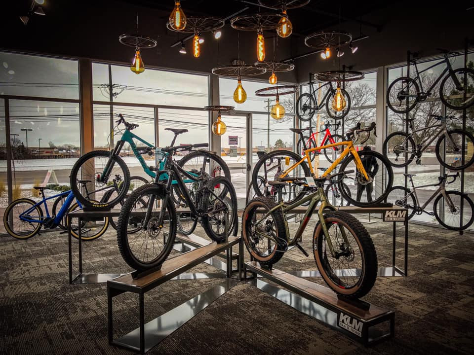

I embarked on a comprehensive data exploration journey, examining customer profiles, preferences, and purchasing patterns. By dissecting demographics, socio-economic factors, and geographic influences, I uncovered valuable insights to optimize sales strategies. This project yielded an interactive coffee sales dashboard that empowers users to explore data trends, ultimately supporting informed decision-making. It showcases my ability to gather, transform, and visualize data effectively, offering a valuable addition to my portfolio and underscoring my skills in data analysis and visualization for business applications.

In this project, I leveraged my data analysis and visualization skills to create a dynamic and comprehensive sales dashboard to meet the management's need for actionable insights. The project resulted in a user-friendly, visually engaging dashboard that empowers stakeholders to make informed decisions based on sales data. This work showcases my proficiency in data analysis, database management, and data visualization, all aimed at simplifying the decision-making process for management.

In this project I take insights in a data exploration journey using popular libraries such as Pandas, Seaborn, and Matplotlib. My aim was to delve into the movie industry's dynamics, particularly focusing on movie revenue over several decades. This project provides a data-driven exploration of the movie industry's evolution, addressing vital questions about its health and the impact of streaming platforms like Netflix. It showcases my proficiency in data analysis, data visualization, and data quality assurance using the most common Python libraries.